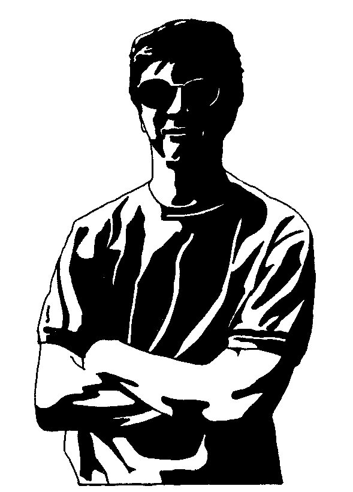
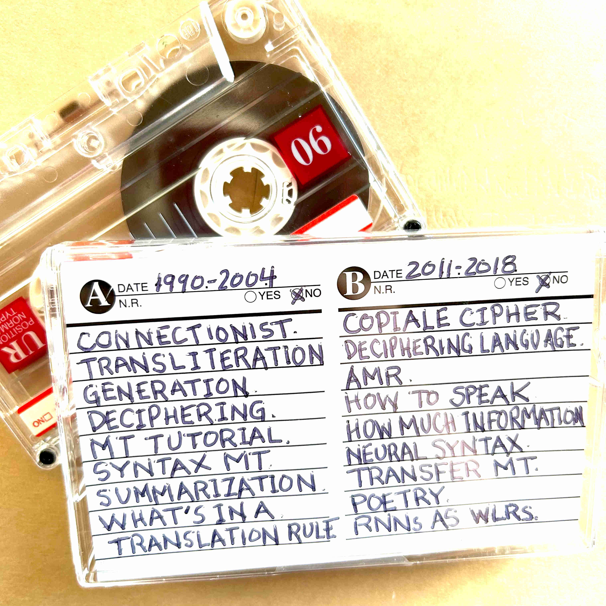

He hears the ticking of the clocks
And walks along with a parrot that talks
- B. Dylan
Arrest this man, he talks in maths.
- Radiohead
When your mother sends back all your invitations
And your father to your sister he explains
That you're tired of yourself and all of your creations
Won't you come see me, Queen Jane?
- B. Dylan
E-mail:
Recent positions: Chief Scientist for NLP (Didi Global), Professor of Computer Science (USC).
Research interests include: artificial intelligence, natural language processing, machine translation, dialog processing, automata theory, number theory, decipherment of historical manuscripts.
My publications. My vita.
I recently wrote a number theory book (see sample chapters), and an art book.
I have a math channel called Math Kook! What's the infamous Collatz conjecture? How many prime numbers are there?
Math forum started ... check it out if you like this topic.
We made a nice site about Chinese NLP! We also co-organized a Russian/Chinese common MT evaluation.
Co-organized IWSLT 2020, co-Program Chair of First Asia-Pacific ACL 2020, co-Program Chair of CCMT 2019 (China Conference on Machine Translation), co-General Chair of CCF-ICAI 2019 (CCF International Conference on Artificial Intelligence).
Lockdown food and view from a bridge.
Leaked Russian war plans ... what could go wrong?
At the publisher, a factual telling.
Cryptography consultant, Under the Silver Lake (2019).
Co-inventor on a 2019 US patent about software that writes patents, written by software that writes patents.
Say what? Don't let him cash you outside.
I put together a long-running natural language seminar. Here are the guidelines.
If I could change my profession, I would like to try naval attaché. Or start a pizza shop. I would name the shop Ozzie's, and my motto would be "Look on my pizza, ye mighty, and despair!" My pizza would be so good that Dominoes would buy me out, just to shut me down, and round the decay, the lone and level sands would stretch far away.
My busy robot. Hush, puppy.
Master of Chaos? Except I don't wear rouge.
Thunder and lightning in Denver.
Just your average face. Bug reports to Google.
No people call me the space cowboy.
A bit of history on advanced research projects.
Bayesian Inference with Tears: get tutorial workbook in PDF.
Aerial view of Capa de Algas.
The Copiale cipher.
Here's a bunch of ISI NLP software.
Listen to the rhythmic news gabbler from me and Marjan. We have thousands of hours!
Cassette tape is a good way to store things.
I think our approach to syntax in machine translation is best described in D. Barthelme's short story They called for more structure.... Explanation 1. Explanation 2?!
I am literally begging you to do more random restarts.
The outside of my laptop.
Check out these slides from my ACL 2013 Decipherment Tutorial.
I was asked to run for a position in my professional association. A bogus platform somehow circulated, which I completely repudiated. Once elected, though, I felt strangely compelled to implement it.
Led Zeppelin! Tangerine guitar solo!
I recently said this out loud: "I want a four-door convertible like the one Lincoln was assassinated in."
The best grade I ever got was "better than expected".
I have been fortunate to work with great students. PhD graduates include: Nima Pourdamghani (thesis on low-resource MT), Xing Shi (thesis on recurrent networks), Marjan Ghazvininejad (thesis on creative language generation), Qing Dou (thesis on decipherment), Steve DeNeefe (thesis on adjoining for MT), Sujith Ravi (thesis on decipherment), Jonathan May (thesis on tree automata for NLP), Yaser Al-Onaizan (thesis on named-entity translation), Kenji Yamada (thesis on syntax-based MT), Irene Langkilde-Geary (thesis on language generation), Philipp Koehn (thesis on noun phrase translation), and Ishwar Chander (thesis on statistical article generation). I co-advised PhD theses from Victoria Fossum, Shou-de Lin and Liang Huang, and I supervised two Masters theses: Bryant Huang's on syntax-structuring for translation, and Nada Aldarrab's thesis on decipherment.
I recently went to Denmark. Here's me in Denmark.
And here's a gruesome fairy tale for you.
I'm possibly the least-skilled person at drawing ever to get paid for it, for example: actual conversations ... strange things ... parking structures ... werld maps. Some fortune-telling cards.
I follow the webcomic Tofu Buffet.
A machine translation glossary for those in the field.
Don't click here.
I wrote a book for little kids, and another book for big kids.
I used to be an Amber freak, a long time ago, and kept myself amused. Since then, five of my favorite writers are Philip K. Dick, Jack Womack, Jim Thompson, George Saunders, and Haruki Murakami. I've read Thompson's Pop 1280 quite a few times -- that is a god-danged good book. Other favorites: A Scanner Darkly, Man in the High Castle, Confessions of a Crap Artist, Puttering about in a Small Land, Now Wait for Last Year, The Penultimate Truth, Ambient, Terraplane, Heathern, Elvissey, Random Acts of Senseless Violence, Let's Put the Future Behind Us, Convenience Store Woman, and Sourdough. I also like Don Delillo, David Lodge, Kurt Vonnegut, and J. D. Salinger. Seems like the first couple of books are always better than all the rest. I like Bob Dylan's music and found his autobiography (Chronicles, Vol. 1) strangely similar Neil Armstrong's biography (First Man). Other books: Tao Te Ching, and Benjamin Tucker's Instead of a Book. I think Gary Shteyngart is funny.
My Dan Klein number is 1.

"Collatz High Cycles Do Not Exist", Discrete Mathematics 349(3), 2026. Get paper.
"A Small Collatz Rule without the Plus One", Complex Systems (to appear), 2026. Get preprint in PDF.

NLP Vol. 1
"Connectionist Ideas and Algorithms" Communications of the ACM, 33(11), November, 1990.
Get paper in PDF.
"Machine Transliteration"
(K. Knight and J. Graehl),
Proc. of the Conference of the Association for Computational Linguistics (ACL), 1997.
Get paper in PDF.
"Generation that Exploits Corpus-based Statistical Knowledge"
(I. Langkilde and K. Knight),
Proc. of the Conference of the Association for Computational Linguistics (COLING/ACL), 1998.
Get paper in PDF.
"A Computational Approach to Deciphering Unknown Scripts"
(K. Knight and K. Yamada),
Proceedings of the ACL Workshop on Unsupervised Learning in Natural Language Processing, 1999.
Get paper in PDF.
"A Statistical MT Tutorial Workbook" August 1999.
Get paper in PDF.
"A Syntax-Based Statistical Translation Model"
(K. Yamada and K. Knight),
Proc. of the Conference of the Association for Computational Linguistics (ACL), 2001.
Get paper in PDF.
"Summarization Beyond Sentence Extraction: A Probabilistic Approach to Sentence Compression"
(K. Knight and D. Marcu),
Artificial Intelligence, 139(1), 2002.
"What's in a Translation Rule?"
(M. Galley, M. Hopkins, K. Knight, D. Marcu), Proc. NAACL-HLT, 2004.
Get paper in PDF.
NLP Vol. 2
"The Copiale Cipher"
(K. Knight, B. Megyesi, and C. Schaefer), ACL Workshop on Building and Using Comparable Corpora (BUCC), 2011.
Get paper in PDF.
"Deciphering Foreign Language"
(S. Ravi and K. Knight), Proc. ACL, 2011.
Get paper in PDF.
"Abstract Meaning Representation for Sembanking"
(L. Banarescu, C. Bonial, S. Cai, M. Georgescu, K. Griffitt, U. Hermjakob, K. Knight, P. Koehn, M. Palmer, and N. Schneider),
Proc. Linguistic Annotation Workshop (LAW VII-ID), ACL, 2013.
Get paper in PDF.
"How to Speak a Language without Knowing It"
(X. Shi, K. Knight, and H. Ji), Proc. ACL, 2014.
Get paper in PDF.
"How Much Information Does a Human Translator Add to the Original?"
(B. Zoph, M. Ghazvininejad, and K. Knight), Proc. EMNLP, 2015.
Get paper in PDF.
"Does String-Based Neural MT Learn Source Syntax?"
(X. Shi, I. Padhi, and K. Knight), Proc. EMNLP, 2016.
Get paper in PDF.
"Transfer Learning for Low-Resource Neural Machine Translation"
(B. Zoph, D. Yuret, J. May, and K. Knight), Proc. EMNLP, 2016.
Get paper in PDF.
"Generating Topical Poetry"
(M. Ghazvininejad, X. Shi, Y. Choi, and K. Knight), Proc. EMNLP, 2016.
Get paper in PDF.
"Recurrent Neural Networks as Weighted Language Recognizers"
(Y. Chen, S. Gilroy, A. Maletti, J. May, and K. Knight), Proc. NAACL, 2018.
Get paper in PDF.
2021
"MeetDot: Videoconferencing with Live Translation Captions" (A. Arkhangorodsky, C. Chu, S. Fang, Y. Huang, D. Jiang, A. Nagesh, B. Zhang, and K. Knight), Proc. EMNLP System Demonstrations, 2021. Get paper in PDF.
"Learning Mathematical Properties of Integers" (M. Ryskina and K. Knight), Proc. EMNLP BlackboxNLP Workshop, 2021. Get paper in PDF.
"MUSE: Textual Attributes Guided Portrait Painting Generation" (X. Hu, P. Yu, K. Knight, H. Ji, B. Li, and H. Shi), Proc. 3rd IEEE Workshop on Artificial Intelligence for Art Creation,2021. Get paper in PDF.
"A Hybrid Task-Oriented Dialog System with Domain and Task Adaptive Pretraining" (B. Zhang, Y. Lyu, N. Ding, T. Shen, Z. Jia, K. Han, and K. Knight), Proc. DSTC9 Workshop (AAAI), 2021. Get paper in PDF.
"Why Neural Machine Translation Prefers Empty Outputs" (X. Shi, Y. Xiao, and K. Knight). Get preprint.
"MEEP: An Open-Source Platform for Human-Human Dialog Collection and End-to-End Agent Training" (A. Arkhangorodsky, A. Axelrod, C. Chu, S. Fang, Y. Huang, A. Nagesh, X. Shi, B. Zhang, K. Knight). Get preprint.
"Two Approaches to Building Collaborative, Task-Oriented Dialog Agents through Self-Play" (A. Arkhangorodsky, S. Fang, V. Knight, A. Nagesh, M. Ryskina, K. Knight). Get preprint.
2020
"DiDi's Machine Translation System for WMT2020" (T. Chen, W. Wang, W. Wei, X. Shi, X. Li, J. Ye, and K. Knight), Proc. WMT, 2020. Get paper in PDF.
"Solving Historical Dictionary Codes with a Neural Language Model" (C. Chu, R. Valenti, and K. Knight), Proc. EMNLP, 2020. Get paper in PDF.
"Learning to Pronounce Chinese Without a Pronunciation Dictionary" (C. Chu, S. Fang, and K. Knight), Proc. EMNLP, 2020. Get paper in PDF.
"Findings of the IWSLT 2020 Evaluation Campaign" (E. Ansari et al), Proc. IWSLT, 2020. Get paper in PDF.
"Parallel Corpus Filtering via Pre-trained Language Models" (B. Zhang, A. Nagesh, K. Knight), Proc. ACL, 2020. Get paper in PDF.
2019
"Decipherment of Historical Manuscripts" (X. Yin, N. Aldarrab, B. Megyesi and K. Knight), Proc. ICDAR, 2019. Get paper in PDF.
"Neighbors Helping the Poor: Improving Low-Resource Machine Translation Using Related Languages" (N. Pourdamghani and K. Knight), Machine Translation, 2019. Get paper in PDF.
"Translating Translationese: A Two-Step Approach to Unsupervised Machine Translation" (N. Pourdamghani, N. Aldarrab, M. Ghazvininejad, K. Knight and J. May), Proc. ACL, 2019. Get paper in PDF.
"PaperRobot: Incremental Draft Generation of Scientific Ideas" (Q. Wang, L. Huang, Z. Jiang, K. Knight, H. Ji, M. Bansal and Y. Luan), Proc. ACL, 2019. Get paper in PDF.
"Plan-And-Write: Towards Better Automatic Storytelling" (N. Peng, R. Weischedel, K. Knight, D. Zhao, and R. Yan), Proc. AAAI, 2019. Get paper in PDF.
2018
"Multi-lingual Common Semantic Space Construction via Cluster-consistent Word Embedding" (L. Huang, K. Cho, B. Zhang, H. Ji and K. Knight), Proc. EMNLP, 2018. Get paper in PDF.
"Modeling Naive Psychology of Characters in Simple Commonsense Stories" (H. Rashkin, A. Bosselut, M. Sap, K. Knight, and Y. Choi), Proc. ACL, 2018. Get paper in PDF.
"Paper Abstract Writing through Rewriting Mechanism" (Q. Wang, Z. Zhou, L. Huang, S. Whitehead, B. Zhang, H. Ji and K. Knight), Proc. ACL, 2018. Get paper in PDF.
"Translating a Language You Don't Know in the Chinese Room" (U. Hermjakob, J. May, M. Pust, and K. Knight), Proc. ACL, Demo Track, 2018. Get paper in PDF.
"Out-of-the-Box Universal Romanization Tool uroman" (U. Hermjakob, J. May, and K. Knight), Proc. ACL, Demo Track, 2018. Best Demonstration Paper Award. Get paper in PDF.
"Neural Poetry Translation" (M. Ghazvininejad, Y. Choi, and K. Knight), Proc. NAACL, 2018. Get paper in PDF.
"ELISA-EDL: A Cross-Lingual Entity Extraction, Linking and Localization System" (B. Zhang, Y. Lin, X. Pan, D. Lu, J. May, K. Knight, and H. Ji), Proc. NAACL, Demo Track, 2018. Get paper in PDF.
"Using Word Vectors to Improve Word Alignments for Low Resource Machine Translation" (N. Pourdamghani, M. Ghazvininejad, and K. Knight), Proc. NAACL, 2018. Get paper in PDF.
"Recurrent Neural Networks as Weighted Language Recognizers" (Y. Chen, S. Gilroy, A. Maletti, J. May, and K. Knight), Proc. NAACL, 2018. Outstanding Paper Award. Get paper in PDF.
"Abstract Meaning Representation of Constructions: The More We Include, the Better the Representation" (C. Bonial, B. Badarau, K. Griffitt, U. Hermjakob, K. Knight, T. O'Gorman, M. Palmer, and N. Schneider), Proc. LREC, 2018. Get paper in PDF.
"AMR Beyond the Sentence: the Multi-sentence AMR Corpus" (T. O'Gorman, M. Regan, K. Griffitt, U. Hermjakob, K. Knight, and M. Palmer), Proc. COLING 2018. Get paper in PDF.
2017
"Deciphering Related Languages" (N. Pourdamghani and K. Knight), Proc. EMNLP, 2017. Get paper in PDF.
"Humans Outperform Machines at the Bilingual Shannon Game" (M. Ghazvininejad and K. Knight), Entropy 19(1), 2017. Get paper.
"Hafez: an Interactive Poetry Generation System" (M. Ghazvininejad*, X. Shi*, J. Priyadarshi, and K. Knight), Proc. ACL Demo Track, 2017. Best Demonstration Paper Award. Get paper in PDF. System. Alexa skill.
"Speeding up Neural Machine Translation Decoding by Shrinking Run-time Vocabulary" (X. Shi and K. Knight), Proc. ACL, 2017. Get paper in PDF.
"Cross-lingual Name Tagging and Linking for 282 Languages" (X. Pan, B. Zhang, J. May, J. Nothman, K. Knight and H. Ji), Proc. ACL, 2017. Get paper in PDF.
"Biomedical Event Extraction using Abstract Meaning Representation" (S. Rao, D. Marcu, K. Knight, and H. Daume), Proc. BioNLP Workshop, ACL, 2017. Get paper in PDF.
"Incident-Driven Machine Translation and Name Tagging for Low-resource Languages" (U. Hermjakob, Q. Li, D. Marcu, J. May, S. J. Mielke, N. Pourdamghani, M. Pust, X. Shi, K. Knight, T. Levinboim, K. Murray, D. Chiang, B. Zhang, X. Pan, D. Lu, Y. Lin, and H. Ji), Machine Translation, 2017. Get paper.
"Team ELISA System for DARPA LORELEI Speech Evaluation 2016" (P. Papadopoulos, R. Travadi, C. Vaz, N. Malandrakis, U. Hermjakob, N. Pourdamghani, M. Pust, B. Zhang, X. Pan, D. Lu, Y. Lin, O. Glembek, M. Karthick B, M. Karafiat, L. Burget, M. Hasegawa-Johnson, H. Ji, J. May,, K. Knight, and S. Narayanan), Proc. Interspeech, 2017. Get paper in PDF.
2016
"Generating Topical Poetry" (M. Ghazvininejad, X. Shi, Y. Choi, and K. Knight), Proc. EMNLP, 2016. Get paper in PDF.
"Why Neural Translations are the Right Length" (X. Shi, K. Knight, and D. Yuret), Proc. EMNLP, 2016. Get paper in PDF.
"Does String-Based Neural MT Learn Source Syntax?" (X. Shi, I. Padhi, and K. Knight), Proc. EMNLP, 2016. Get paper in PDF.
"Transfer Learning for Low-Resource Neural Machine Translation" (B. Zoph, D. Yuret, J. May, and K. Knight), Proc. EMNLP, 2016. Get paper in PDF.
"Unsupervised Neural Hidden Markov Models" (K. Tran, Y. Bisk, A. Vaswani, D. Marcu, and K. Knight), Proc. EMNLP Workshop on Structured Prediction, 2016. Get paper in PDF.
"Obfuscating Gender in Social Media Writing" (S. Reddy and K. Knight), Proc. EMNLP Workshop on Natural Language Processing and Computational Social Science, 2016. Get paper in PDF.
"Generating English from Abstract Meaning Representation" (N. Pourdamghani, K. Knight, and U. Hermjakob), Proc. INLG, 2016. Get paper in PDF.
"Grapheme-to-Phoneme Models for (Almost) Any Language" (A. Deri and K. Knight), Proc. ACL, 2016. Get paper in PDF.
"A Multi-media Approach to Cross-lingual Entity Knowledge Transfer" (D. Lu, X. Pan, N. Pourdamghani, H. Ji, S.-F. Chang and K. Knight), Proc. ACL, 2016. Get paper in PDF.
"Leveraging Entity Linking and Related Language Projection to Improve Name Transliteration" (Y. Lin, X. Pan, A. Deri, H. Ji, and K. Knight), Proc. ACL 2016 Workshop on Named Entities, 2016. Get paper in PDF.
"Multi-Source Neural Translation" (B. Zoph and K. Knight), Proc. NAACL, 2016. Get paper in PDF.
"Simple, Fast Noise Contrastive Estimation for Large RNN Vocabularies" (B. Zoph, A. Vaswani, J. May, and K. Knight), Proc. NAACL, 2016. Get paper in PDF.
"Name Tagging for Low-Resource Incident Languages Based on Expectation-Driven Learning" (B. Zhang, X. Pan, T. Wang, A. Vaswani, H. Ji, K. Knight, and D. Marcu), Proc. NAACL, 2016. Get paper in PDF.
"Extracting Structured Scholarly Information from the Machine Translation Literature" (E. Choi, M. Horvat, J. May, K. Knight, D. Marcu), Proc. LREC, 2016. Get paper in PDF.
"From to Translation: Processing the Endangered Nyushu Script" (T. Zhang, A. Chowdhury, N. Dhulekar, J. Xia, K. Knight, H. Ji, B. Yener, L. Zhao), ACM Transactions on Asian and Low-Resource Language Information Processing, 15(4), 2016. Get paper in PDF.
2015
"Parsing English into Abstract Meaning Representation Using Syntax-Based Machine Translation" (M. Pust, U. Hermjakob, K. Knight, D. Marcu, and J. May), Proc. EMNLP, 2015. Get paper in PDF.
"How Much Information Does a Human Translator Add to the Original?" (B. Zoph, M. Ghazvininejad, and K. Knight), Proc. EMNLP, 2015. Get paper in PDF.
"Unifying Bayesian Inference and Vector Space Models for Improved Decipherment" (Q. Dou, A. Vaswani, K. Knight, and C. Dyer), Proc. ACL, 2015. Get paper in PDF.
"How to Make a Frenemy: Multitape FSTs for Portmanteau Generation" (A. Deri and K. Knight), Proc. NAACL, 2015. Get paper in PDF. Get data. See demo.
"How to Memorize a Random 60-Bit String" (M. Ghazvininejad and K. Knight), Proc. NAACL, 2015. Get paper in PDF. Listen to demo. Generate new password.
"Unsupervised Entity Linking with Abstract Meaning Representation" (X. Pan, T. Cassidy, U. Hermjakob, H. Ji, and K. Knight), Proc. NAACL, 2015. Get paper in PDF.
"Building and Using a Knowledge Graph to Combat Human Trafficking" (Szekely, P.; Knoblock, C. A.; Slepicka, J.; Philpot, A.; Singh, A.; Yin, C.; Kapoor, D.; Natarajan, P.; Marcu, D.; Knight, K.; Stallard, D.; Karunamoorthy, S. S.; Bojanapalli, R.; Minton, S.; Amanatullah, B.; Hughes, T.; Tamayo, M.; Flynt, D.; Artiss, R.; Chang, S.; Chen, T.; Hiebel, G.; and Ferreira, L.) Proc. ISWC, 2015. Best Applied Paper Award. Get paper in PDF.
2014
"Mapping between English Strings and Reentrant Semantic Graphs" (F. Braune, D. Bauer, and K. Knight), Proc. LREC, 2014. Get paper in PDF. Get data. Video.
"How to Speak a Language without Knowing It" (X. Shi, K. Knight, and H. Ji), Proc. ACL, 2014. Get paper in PDF. Get data.
"Be Appropriate and Funny: Automatic Entity Morph Encoding" (B. Zhang, H. Huang, X. Pan, H. Ji, K. Knight, Z. Wen, Y. Sun, J. Han, B. Yener), Proc. ACL, 2014. Get paper in PDF. Get data.
"Aligning Context-based Statistical Models of Language with Brain Activity During Reading" (Leila Wehbe, Ashish Vaswani, Kevin Knight and Tom Mitchell), Proc. EMNLP, 2014. Get paper in PDF.
"Aligning English Strings with Abstract Meaning Representation Graphs" (Nima Pourdamghani, Yang Gao, Ulf Hermjakob and Kevin Knight), Proc. EMNLP, 2014. Get paper in PDF. Get dev data. Get test data.
"Beyond Parallel Data: Joint Word Alignment and Decipherment Improves Machine Translation" (Qing Dou, Ashish Vaswani and Kevin Knight), Proc. EMNLP, 2014. Get paper in PDF.
"Cipher Type Detection" (Malte Nuhn and Kevin Knight), Proc. EMNLP, 2014. Get paper in PDF.
2013
"Dependency-Based Decipherment for Resource-Limited Machine Translation" (Q. Dou and K. Knight), Proc. EMNLP, 2013. Get paper in PDF.
"Abstract Meaning Representation for Sembanking" (L. Banarescu, C. Bonial, S. Cai, M. Georgescu, K. Griffitt, U. Hermjakob, K. Knight, P. Koehn, M. Palmer, and N. Schneider), Proc. Linguistic Annotation Workshop (LAW VII-ID), ACL, 2013. Get paper in PDF.
"Parsing Graphs with Hyperedge Replacement Grammars" (D. Chiang, J. Andreas, D. Bauer, K. M. Hermann, B. Jones, and K. Knight), Proc. ACL, 2013. Get paper in PDF.
"Smatch: an Evaluation Metric for Semantic Feature Structures" (S. Cai and K. Knight), Proc. ACL, 2013. Get paper in PDF.
"Curating and Contextualizing Twitter Stories to Assist with Social Newsgathering" (A. Zubiaga, H. Ji, and K. Knight), Proc. IUI, 2013. Get paper in PDF.
2012
"Semantics-Based Machine Translation with Hyperedge Replacement Grammars" (B. Jones, J. Andreas, D. Bauer, K-M. Hermann, and K. Knight), Proc. COLING, 2012. Get paper in PDF.
"Towards Probabilistic Acceptors and Transducers for Feature Structures" (D. Quernheim and K. Knight), Proc. ACL SSST Workshop, 2012. Get paper in PDF.
"DAGGER: A Toolkit for Automata on Directed Acyclic Graphs" (D. Quernheim and K. Knight), Proc. FSMNLP, 2012. Get paper in PDF.
"Large Scale Decipherment for Out-of-Domain Machine Translation" (Q. Dou and K. Knight), Proc. EMNLP, 2012. Get paper in PDF.
"Decoding Running Key Ciphers" (S. Reddy and K. Knight), Proc. ACL, Short Paper, 2012. Get paper in PDF.
"The Secrets of the Copiale Cipher" (K. Knight, B. Megyesi, and C. Schaefer), Journal of Research into Freemasonry and Fraternalism, 2(2), 2012.
2011
"Deciphering Foreign Language" (S. Ravi and K. Knight), Proc. ACL, 2011. Get paper in PDF.
"Bayesian Inference for Zodiac and Other Homophonic Ciphers" (S. Ravi and K. Knight), Proc. ACL, 2011. Get paper in PDF.
"Unsupervised Discovery of Rhyme Schemes" (S. Reddy and K. Knight), Proc. ACL, 2011. Get paper in PDF.
"What We Know About the Voynich Manuscript" (S. Reddy and K. Knight), Proc. ACL Workshop on Language Technology for Cultural Heritage, Social Sciences, and Humanities (LaTeCH), 2011. Get paper in PDF.
"The Copiale Cipher" (K. Knight, B. Megyesi, and C. Schaefer), part of invited talk at ACL Workshop on Building and Using Comparable Corpora (BUCC), 2011. Get paper in PDF.
2010
"Automatic Analysis of Rhythmic Poetry with Applications to Generation and Translation" (E. Greene, T. Bodrumlu, and K. Knight), Proc. EMNLP, 2010. Get paper in PDF.
"Re-Structuring, Re-Labeling, and Re-Aligning for Syntax-Based Statistical Machine Translation" (W. Wang, J. May, K. Knight, and D. Marcu), Computational Linguistics, 36(2), 2010. Get paper in PDF.
"A Decoder for Probabilistic Synchronous Tree Insertion Grammars" (S. DeNeefe, K. Knight, and H. Vogler), Proc. ACL Workshop on Applications of Tree Automata in Natural Language Processing, 2010. Get paper in PDF.
"Fast, Greedy Model Minimization for Unsupervised Tagging" (S. Ravi, A. Vaswani, K. Knight, and D. Chiang), Proc. COLING, 2010. Get paper in PDF.
"Does GIZA++ Make Search Errors?" (S. Ravi and K. Knight), Computational Linguistics, Squibs & Discussion, 36(3), 2010. Get paper in PDF.
"Unsupervised Syntactic Alignment with Inversion Transduction Grammars" (A. Pauls, D. Klein, D. Chiang, and K. Knight), Proc. NAACL, 2010. Get paper in PDF.
"Bayesian Inference for Finite-State Transducers" (D. Chiang, J. Graehl, K. Knight, A. Pauls, and S. Ravi), Proc. NAACL, 2010. Get paper in PDF.
"Minimized Models and Grammar-Informed Initialization for Supertagging with Highly Ambiguous Lexicons" (S. Ravi, J. Baldridge, and K. Knight), Proc. ACL, 2010. Get paper in PDF.
"Efficient Inference through Cascades of Weighted Tree Transducers" (J. May, K. Knight, and H. Vogler), Proc. ACL, 2010. Get paper in PDF.
"A Statistical Model for Lost Language Decipherment" (B. Snyder, R. Barzilay, and K. Knight), Proc. ACL, 2010. Get paper in PDF.
2009
"Bayesian Inference with Tears" Get tutorial workbook in PDF.
"Binarization of Synchronous Context-Free Grammars" (L. Huang, H. Zhang, D. Gildea, and K. Knight), Computational Linguistics, 35(4), 2009. Get paper in PDF.
"Synchronous Tree Adjoining Machine Translation" (S. DeNeefe and K. Knight), Proc. EMNLP, 2009. Get paper in PDF.
"Minimized Models for Unsupervised Part-of-Speech Tagging" (S. Ravi and K. Knight), Proc. ACL, 2009. Get paper in PDF.
"Fast Consensus Decoding over Translation Forests" (J. DeNero, D. Chiang, and K. Knight), Proc. ACL, 2009. Get paper in PDF.
"Learning Phoneme Mappings for Transliteration without Parallel Data" (S. Ravi and K. Knight), Proc. NAACL, 2009. Get paper in PDF.
"11,001 New Features for Statistical Machine Translation" (D. Chiang, K. Knight, and W. Wang), Proc. NAACL, 2009. Best Paper Award. Get paper in PDF.
"Combining Constituent Parsers" (V. Fossum and K. Knight), Proc. NAACL (short paper), 2009. Get paper in PDF.
"Faster MT Decoding through Pervasive Laziness" (M. Pust and K. Knight), Proc. NAACL (short paper), 2009. Get paper in PDF.
"A New Objective Function for Word Alignment" (T. Bodrumlu, K. Knight, and S. Ravi), Proc. NAACL Workshop on Integer Linear Programming for NLP, 2009. Get paper in PDF.
"The Power of Extended Top-Down Tree Transducers" (A. Maletti, J. Graehl, M. Hopkins, and K. Knight), SIAM J. Comput. 39(2), pp. 410-430, 2009. Get paper in PDF.
"Probabilistic Methods for a Japanese Syllable Cipher" (S. Ravi and K. Knight), Proc. International Conference on the Computer Processing of Oriental Languages, 2009. Get paper in PDF.
"Applications of Weighted Automata in Natural Language Processing" (K. Knight and J. May), Handbook of Weighted Automata (M. Droste, W. Kuich, H. Vogler, eds.), 2009.
"Attacking Decipherment Problems Optimally with Low-Order N-gram Models" (S. Ravi and K. Knight), Cryptologia, 33(4), pp. 321-334, 2009. Get paper in PDF.
2008
"Training Tree Transducers" (J. Graehl, K. Knight, and J. May), Computational Linguistics, 34(3), 2008. Get paper in PDF.
"Using Syntax to Improve Word Alignment Precision for Syntax-Based Machine Translation" (V. Fossum, K. Knight, and S. Abney), Proc. Workshop on Statistical MT, ACL, 2008. Get paper in PDF.
"Name Translation in Statistical Machine Translation: Learning When to Transliterate" (U. Hermjakob, K. Knight, and H. Daume III), Proc. ACL, 2008. Get paper in PDF.
"Attacking Decipherment Problems Optimally with Low-Order N-gram Models" (S. Ravi and K. Knight), Proc. EMNLP, 2008. Get paper in PDF.
"Automatic Prediction of Parser Accuracy" (S. Ravi, K. Knight, and R. Soricut), Proc. EMNLP, 2008. Get paper in PDF.
"Overcoming Vocabulary Sparsity in MT Using Lattices" (S. DeNeefe, U. Hermjakob, and K. Knight), Proc. AMTA, 2008. Get paper in PDF.
"Using Bilingual Chinese-English Word Alignments to Resolve PP-Attachment Ambiguity in English" (V. Fossum and K. Knight), Proc. AMTA (student session), 2008. Get paper in PDF.
2007
"Capturing Practical Natural Language Transformations" (K. Knight), Machine Translation, 21(2), 2007. publication
"Syntactic Re-Alignment Models for Machine Translation" (J. May and K. Knight), Proc. EMNLP-CoNLL, 2007. Get paper in PDF.
"What Can Syntax-Based MT Learn from Phrase-Based MT?" (S. DeNeefe, K. Knight, W. Wang, D. Marcu), Proc. EMNLP-CoNLL, 2007. Get paper in PDF.
"Binarizing Syntax Trees to Improve Syntax-Based Machine Translation Accuracy" (W. Wang, K. Knight and D. Marcu), Proc. EMNLP-CoNLL, 2007. Get paper in PDF.
2006
"SPMT: Statistical Machine Translation with Syntactified Target Language Phrases" (D. Marcu, W. Wang, A. Echihabi, K. Knight), Proc. EMNLP, 2006.
"Statistical Syntax-Directed Translation with Extended Domain of Locality" (L. Huang, K. Knight, A. Joshi), Proc. AMTA (poster), 2006. Get paper in PDF.
"Tiburon: A Weighted Tree Automata Toolkit" (J. May and K. Knight), Proc. International Conference on Implementation and Application of Automata (CIAA), Lecture Notes in Computer Science (Springer), v. 4094/2006, 2006. Get paper in PDF.
"Building an English-Iraqi Arabic Machine Translation System for Spoken Utterances with Limited Resources" (J. Riesa, B. Mohit, K. Knight, D. Marcu), Proc. Interspeech, 2006. Get paper in PDF.
"Unsupervised Analysis for Decipherment Problems" (K. Knight, A. Nair, N. Rathod, and K. Yamada), Proc. ACL-COLING (poster), 2006. Get paper in PDF.
"Scalable Inference and Training of Context-Rich Syntactic Models" (M. Galley, J. Graehl, K. Knight, D. Marcu, S. DeNeefe, W. Wang, and I. Thayer), Proc. ACL-COLING, 2006. Get paper in PDF.
"Discovering the Linear Writing Order of a Two-Dimensional Ancient Hieroglyphic Script" (Shou-de Lin and Kevin Knight), Artificial Intelligence, volume 170(4-5), 2006. Get draft in PDF.
"A Better N-Best List: Practical Determinization of Weighted Finite Tree Automata" (J. May and K. Knight), Proc. NAACL-HLT, 2006. Get paper in PDF.
"Capitalizing Machine Translation" (W. Wang, K. Knight, D. Marcu), Proc. NAACL-HLT, 2006. Get paper in PDF.
"Synchronous Binarization for Machine Translation" (H. Zhang, L. Huang, D. Gildea, K. Knight), Proc. NAACL-HLT, 2006. Get paper in PDF.
"Relabeling Syntax Trees to Improve Syntax-Based Machine Translation Quality" (B. Huang and K. Knight), Proc. NAACL-HLT, 2006. Get paper in PDF.
2005
"Transonics: A Practical Speech-to-Speech Translator for English-Farsi Medical Dialogs" (Robert Belvin, Emil Ettelaie, Sudeep Gandhe, Panayiotis Georgiou, Kevin Knight, Daniel Marcu, Scott Millward, Shrikanth Narayanan, Howard Neely, David Traum), Proc. ACL poster/demo, 2005.
"Interactively Exploring a Machine Translation Model" (Steve DeNeefe, Kevin Knight, and Hayward H. Chan), Proc. ACL poster/demo, 2005. Get paper in PDF.
"Machine Translation in the Year 2004" (K. Knight, D. Marcu), Proc. ICASSP, 2005. Get paper in PDF.
"An Overview of Probabilistic Tree Transducers for Natural Language Processing" (K. Knight, J. Graehl), Proc. of the Sixth International Conference on Intelligent Text Processing and Computational Linguistics (CICLing), Lecture Notes in Computer Science, copyright Springer Verlag, 2005. Get paper in PDF.
2004
"Text Simplification for Information Seeking Applications" (B. Beigman Klebanov, K. Knight, D. Marcu), In: On the Move to Meaningful Internet Systems, eds. R. Meersman and Z. Tari, Lecture Notes in Computer Science (3290), copyright Springer Verlag, 2004.
"What's in a Translation Rule?" (M. Galley, M. Hopkins, K. Knight, D. Marcu), Proc. NAACL-HLT, 2004. Get paper in PDF.
"Training Tree Transducers" (J. Graehl, K. Knight), Proc. NAACL-HLT, 2004. Get paper in PDF.
"The Transonics Spoken Dialogue Translator: An Aid for English-Persian Doctor-Patient Interviews" (S. Narayanan, S. Ananthakrishnan, R. Belvin, E. Ettaile, S. Gandhe, S. Ganjavi, P. G. Georgiou, C. M. Hein, S. Kadambe, K. Knight, D. Marcu, H. E. Neely, N. Srinivasamurthy, D. Traum, and D. Wang), AAAI Fall Symposium, 2004.
2003
"Syntax-based Language Models for Machine Translation" (E. Charniak, K. Knight, and K. Yamada), Proc. MT Summit IX, 2003. Get paper in PDF.
"Feature-Rich Statistical Translation of Noun Phrases" (P. Koehn and K. Knight), Proc. ACL, 2003. Get paper in PDF.
"Syntax-based Alignment of Multiple Translations: Extracting Paraphrases and Generating New Sentences" (B. Pang, K. Knight, and D. Marcu), Proc. NAACL-HLT, 2003. Get paper in PDF.
"Transonics: A Speech to Speech System for English-Persian Interactions" (S. Narayanan, S. Ananthakrishnan, R. Belvin, E. Ettaile, S. Ganjavi, P. Georgiou, C. Hein, S. Kadambe, K. Knight, D. Marcu, H. Neely, N. Srinivasamurthy, D. Traum, and D. Wang), Proc. IEEE ASRU, 2003.
"Finding the WRITE Stuff: Automatic Identification of Discourse Structure in Student Essays" (J. Burstein, D. Marcu, and K. Knight), IEEE Intelligent Systems, Jan/Feb, 2003.
"Translation with Scarce Bilingual Resources" (Y. Al-Onaizan, U. Germann, U. Hermjakob, K. Knight, P. Koehn, D. Marcu, K. Yamada), Machine Translation, 2003.
"Fast Decoding and Optimal Decoding for Machine Translation" (U. Germann, M. Jahr, K. Knight, D. Marcu, and K. Yamada), Artificial Intelligence, 2003.
"Teaching Statistical Machine Translation" (K. Knight), Proc. MT Summit IX Workshop on Teaching Machine Translation, 2003. Get paper in PDF.
"Cognates Can Improve Statistical Translation Models" (G. Kondrak, D. Marcu, and K. Knight), Proc. NAACL-HLT, 2003. Get paper in PDF.
"Desperately Seeking Cebuano" (D. Oard, D. Doermann, B. Dorr, D. He, P. Resnik, A. Weinberg, W. Byrne, S. Khudanpur, D. Yarowsky, A. Leuski, P. Koehn, and K. Knight), Proc. NAACL-HLT, 2003. Get paper in PDF.
"Empirical Methods for Compound Splitting" (P. Koehn and K. Knight), Proc. EACL, 2003. Get paper in PDF.
2002
"Using a Large Monolingual Corpus to Improve Translation Accuracy" (R. Soricut, K. Knight, and D. Marcu), Proceedings of the 6th AMTA Conference, 2002. Get paper in PDF.
"Learning a Translation Lexicon from Monolingual Corpora" (P. Koehn and K. Knight), Proc. of ACL Workshop on Unsupervised Lexical Acquisition, 2002. Get paper in PDF.
"Summarization Beyond Sentence Extraction: A Probabilistic Approach to Sentence Compression" (K. Knight and D. Marcu), Artificial Intelligence, 139(1), 2002.
"Named Entity Translation: Extended Abstract" (Y. Al-Onaizan and K. Knight), Proc. HLT, 2002. Get paper in Postscript.
"Translating Named Entities Using Monolingual and Bilingual Resources" (Y. Al-Onaizan and K. Knight), Proc. of the Conference of the Association for Computational Linguistics (ACL), 2002. Get paper in PDF.
"Machine Transliteration of Names in Arabic Text" (Y. Al-Onaizan and K. Knight) Proc. of ACL Workshop on Computational Approaches to Semitic Languages, 2002. Get paper in PDF.
"A Decoder for Syntax-Based Statistical MT" (K. Yamada and K. Knight), Proc. of the Conference of the Association for Computational Linguistics (ACL), 2002. Get paper in PDF.
2001
"A Syntax-Based Statistical Translation Model" (K. Yamada and K. Knight), Proc. of the Conference of the Association for Computational Linguistics (ACL), 2001. Get paper in PDF.
"Fast Decoding and Optimal Decoding for Machine Translation" (U. Germann, M. Jahr, K. Knight, D. Marcu, and K. Yamada), Proc. of the Conference of the Association for Computational Linguistics (ACL), 2001. Best Paper Award. Get paper in PDF.
"Knowledge Sources for Word-Level Translation Models" (P. Koehn and K. Knight), Empirical Methods in Natural Language Processing conference (EMNLP), 2001. Get paper in PDF.
2000
"Translating with Scarce Resources" (Y. Al-Onaizan, U. Germann, U. Hermjakob, K. Knight, P. Koehn, D. Marcu, K. Yamada), National Conference on Artificial Intelligence (AAAI), 2000. Get paper in PDF.
"Preserving Ambiguities in Generation via Automata Intersection" (K. Knight and I. Langkilde), National Conference on Artificial Intelligence (AAAI), 2000. Get paper in PDF.
"Estimating Word Translation Probabilities from Unrelated Monolingual Corpora Using the EM Algorithm" (P. Koehn and K. Knight), National Conference on Artificial Intelligence (AAAI), 2000. Get paper in PDF.
"Statistics-Based Summarization --- Step One: Sentence Compression" (K. Knight and D. Marcu), National Conference on Artificial Intelligence (AAAI), 2000. Outstanding Paper Award. Get paper in PDF.
1999
"Decoding Complexity in Word-Replacement Translation Models" Computational Linguistics, Squibs & Discussion, 25(4), 1999. Get paper in PDF.
"Mining Online Text" Communications of the ACM, 42(11), November 1999.
"A Statistical MT Tutorial Workbook," unpublished, August 1999. Get paper in PDF. Get pretty version from Richard Wicentowski in PDF. Get paper in Word.
"A Computational Approach to Deciphering Unknown Scripts" (K. Knight and K. Yamada), Proceedings of the ACL Workshop on Unsupervised Learning in Natural Language Processing, 1999. Get paper in PDF.
1998
"Machine Transliteration" (K. Knight and J. Graehl), Computational Linguistics, 24(4), 1998. Get paper in PDF.
"Translation with Finite-State Devices" (K. Knight and Y. Al-Onaizan), Proceedings of the 4th AMTA Conference, 1998. Get paper in PostScript.
"Generation that Exploits Corpus-based Statistical Knowledge" (I. Langkilde and K. Knight), Proc. of the Conference of the Association for Computational Linguistics (COLING/ACL), 1998. Test of Time Award. Get paper in PDF.
"Translating Names and Technical Terms in Arabic Text" (B. Stalls and K. Knight), Proc of the COLING/ACL Workshop on Computational Approaches to Semitic Languages, 1998. Get paper in PDF.
"The Practical Value of N-Grams in Generation" (I. Langkilde and K. Knight), Proc. of the International Natural Language Generation Workshop, 1998. Get paper in PDF.
1997
"Automating Knowledge Acquisition for Machine Translation" AI Magazine 18(4), 1997. Get paper in PDF.
"Machine Transliteration" (K. Knight and J. Graehl), Proc. of the Conference of the Association for Computational Linguistics (ACL), 1997. Test of Time Award. Get paper in PDF.
1996
"It's Time for Your Evaluation" special section, What Makes a Compelling Empirical Evaluation in AI, IEEE Expert, 11(5), 1996.
"Learning Word Meanings by Instruction", Proc. of the National Conference on Artificial Intelligence (AAAI), 1996. Get paper in PDF.
1995
"Two-Level, Many-Paths Generation" (K. Knight and V. Hatzivassiloglou), Proc. of the Conference of the Association for Computational Linguistics (ACL), 1995. Get paper in PDF.
"Filling Knowledge Gaps in a Broad-Coverage MT System" (K. Knight, I. Chander, M. Haines, V. Hatzivassiloglou, E. Hovy, M. Iida, S. K. Luk, R. Whitney, and K. Yamada), Proc. of the International Joint Conference on Artificial Intelligence (IJCAI), 1995. Get paper in PostScript.
"Unification-Based Glossing" (V. Hatzivassiloglou and K. Knight), Proc. of the International Joint Conference on Artificial Intelligence (IJCAI), 1995. Get paper in PostScript.
1994/earlier
"Integrating Knowledge Bases and Statistics in MT" (K. Knight, I. Chander, M. Haines, V. Hatzivassiloglou, E. Hovy, M. Iida, S. Luk, A. Okumura, R. Whitney, K. Yamada), Proc. of the Conference of the Association for Machine Translation in the Americas (AMTA), 1994. Get paper in PostScript.
"Building a Large-Scale Knowledge Base for Machine Translation" (K. Knight and S. Luk), Proc. of the National Conference on Artificial Intelligence (AAAI), 1994. Get paper in PDF.
"Automated Postediting of Documents" (K. Knight and I. Chander), Proc. of the National Conference on Artificial Intelligence (AAAI), 1994. Get paper in PDF.
"Unification", The Encyclopedia of Artificial Intelligence, Second Edition, John Wiley and Sons, 1992.
"Integrating Knowledge Acquisition and Language Acquisition" Applied Intelligence, 1(1), 1992.
Artificial Intelligence, Second Edition (E. Rich and K. Knight), McGraw-Hill Book Company, 1991.
"Automated Rationalization" (K. Knight and Y. Gil), Proceedings of the Workshop on Multistrategy Learning (Harpers Ferry, WV), 1991. Get paper in PDF.
"Connectionist Ideas and Algorithms", Communications of the ACM, 33(11), November, 1990. Get paper in PDF.
"Knowledge and Natural Language Processing" (J. Barnett, K. Knight, I. Mani, and E. Rich), Communications of the ACM, 33(8), August, 1990.
"Unification: A Multidisciplinary Survey" (K. Knight), ACM Computing Surveys, 21(1), 1989. Get paper in PDF.
{kind=link}
{kind=link}
{kind=link}
{kind=link}
{kind=link}
{kind=link}